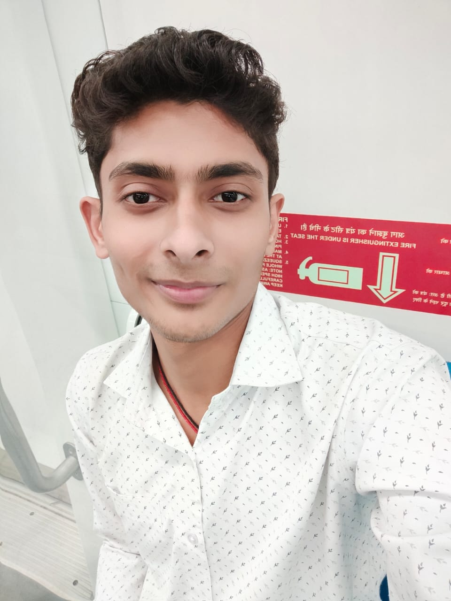

Hi, I'm Anand !
I am a Computer Vision Engineer at Toothlen Inc. where I am building the next generation of VIT,MMDIT models for medical imaging.
I am a Computer Vision Engineer at Toothlen Inc. where I am building the next generation of VIT,MMDIT models for medical imaging.
I've implemented high-precision visual analysis and object detection systems by integrating advanced tools and frameworks, including PyTorch, OpenCV, Fast R-CNN, YOLO, Matplotlib, and Vision Transformers.